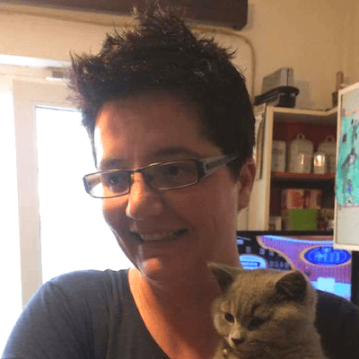

Level up: playing the automation game
Fun fact: In addition to being a world-renowned automation engineer, Angie Jones is also a game designer. She created a competitive fashion game that has all of the elements that keep players coming back for years.
In this talk, Angie will share the key aspects to game design and how she has utilized them to help her navigate automation projects. Learn how gaming concepts can help you get to your next level!

Selenium: state of the union
Simon and Jim join us for a fireside chat to share the latest from the Selenium Project.

Simon Stewart
Lead Committer, Selenium Project & Creator of WebDriver

Jim Evans
Core Contributor at Selenium
Sub-second acceptance tests
As a programmer I make hundreds of mistakes every day. I only check a few of them into source control because I'm able to discover my mistakes within seconds. Fast unit tests uncover some mistakes, but to get maximum confidence I rely on full-stack functional acceptance tests as well.
Over the past couple of years I have discovered techniques for making functional acceptance tests run in milliseconds. The effect on productivity is almost unbelievable.
In this talk I'll demonstrate those techniques. I'll also explain how to organise functional tests so they can be run in different configurations, optimised for confidence or speed.

How test engineers with collaborative and growth mindset are winning
Over the course of my career, I've worked with some amazingly intelligent and talented engineers. Jumping onto a new team with an excellent product idea or concept is so exciting. Unfortunately, a lot of the projects I've worked on have either already failed or become massively unsustainable, especially when it comes to testing. Test Engineers are often isolated into a single role and expected to have a specialisation. Because the skill set for the Test Engineer is so varied and complex, getting stuck with no collaboration leads to a bottleneck in software development and stifles the project's success. Changing our mindset alone will make a huge difference in how we function on a team and lead to project success definitively. How can we use mindset to prevent talented engineers from hitting dead ends and make sure our teams are successful? How can a productive mindset help a team face and overcome failure?
Automating repetitive communication tasks with a Bot
In this talk, we will discuss:
- An idea of creating a code monitoring and talking bot which has the potential to prevent and resolve communication problems
- Know how I leveraged the power of existing systems to create it
- Know how you can also use and create your own personal 24*7 guard/assistant for your team.
Imagine, it is one of your Release Days and the code started breaking all of a sudden, tested features are not working anymore, and it is going to take time to figure out whom to reach & people start passing the buck?
Experienced such stormy sailing on your release day? Yes, in fast-paced organisations like ours, it is a burning problem. Do you also feel the same?
- Did you feel like escaping from the heated discussion?
- Always wanted to have a mechanism to prevent or deal with it in a better way?
- Just starting off your company and do not want to go through the same challenges we went through?
- Are you - “We have already solved it”. As a tech geek, are you excited to explore a different way?
Eager to know how? Come let’s talk, watch it in real and yes, get to start using the solution in almost no time. Wait! did I tell you it is open sourced?
A little attempt towards making healthier work culture and keeping the smart brains happier :-)
AI for element selection
A core pain point in the development and maintenance of Selenium and Appium test scripts is the fragility of element selection. Elements are traditionally identified in the application for interaction or validation using XPATH, CSS, Accessibility IDs, or other element attributes. There are two primary issues with these approaches. First, it is slow and cumbersome to identify/create the XPATH, CSS or other selectors. Second, as the application changes from build to build, these selectors often break and need to be manually updated.
This presentation describes a method of directly applying Artificial Intelligence (AI) and Machine Learning (ML) techniques to quickly build more robust element selectors. A discussion of the underlying open technology, processes, measurements of correctness and robustness will be presented. Get a glimpse of the future of element selection, and learn enough technical detail to apply it in your own test automation.
The one with the automation
It's a story of the journey we embark on when creating an automation library, how we used it in our tests, how did it improve our daily lives but also what we didn't do so well along the way.
When I first heard of automation (in the context of continuous delivery) I thought it is the holy grail of testing that will save me time and make testing better. Although the previous two statements are true, what I have learned over the last 6 years is that it can be both good and bad, and sometimes ugly. I will show you what I have learned through doing it every day (and sometimes in my sleep), what mistakes I’ve made and also what success looks like.
Designing the new Selenium IDE
Back in August Selenium has officially deprecated Selenium IDE.
The IDE was used by many test automation professionals around the world, and now they had nothing to work with.
I've had the pleasure of working on this open source project full time, for the last 6 months, And I've been working very hard on bringing it back!
In this talk we're gonna discuss the difficulties, the design and the work of Selenium IDE. We're also gonna see how we can use Selenium IDE for all types of testing, as well as in your CI pipeline.
The well architected automation framework
Test automation talks tend to focus on dealing with flakey tests, reducing runtime, etc. even after most of those problems had credible solutions 5+ years ago. What doesn’t get discussed at automation events is where their automation is run and how that has just as much an impact on the success of the automation project. It also would comfortably place money on the table that an incorrectly configured automation environment is responsible for at least one major privacy breach -- and will be again in the future. Do you want to responsible for a GDPR penalty? I don't...
This talk introduces AWS’ ‘Well Architected Framework’ as a reference on how to bring Security, Reliability, Performance Efficiency, Cost Optimization, and Operational Excellence to your automation infrastructure.

Sleeping is not your best friend in automation
We all know that timeouts or sleeps affect testing performance and decrease test reliability. We certainly don’t want to load down any of our scripts with needless timeouts and delays.
Sometimes automation testers are caught red handed inserting sleeps in tricky places. Instead of giving in to frustration, patiently and persistently show them how to use intelligent waits for specific conditions.
One goal of this talk is to emphasize that we need to aim for efficient and reliable tests. No more flakey tests.
Whatever action we take in automation whether it be a gesture, keystroke or mouse event; we need to know what conditions to anticipate, understand how elements on a web page or application screen are going to change. We will explore a few ways of how to wait for specific expected conditions.
SpongeBob in his high pitched annoying voice, always says “I’M READY!” That’s how we should view our automation elements, slightly annoying, but always saying loudly “I’m ready” before we perform any actions on them.
Spot the difference; automating visual regression testing
This session looks at common issues with just relying on end to end automation testing tools, using examples to demonstrate common pitfalls and how visual testing can help add another tool to your tool belt.
The talk looks at why we automate tests, the issue with just manually testing, common end to end automation pitfalls, a brief introduction to visual testing and finally a look at common issues with visual testing and ways to overcome them.
Through the use of interactive examples the audience will gain an understanding of why relying on just manual testing can become an issue and how too much automation has a negative impact by looking at testing anti-patterns. The audience will also learn what visual testing is, what tools are available, some of the common pitfalls of using visual testings as well as tips on ways to overcome them based on experience of creating a custom visual test framework at my current employer.
UI automation – it’s not free
With the introduction of an open source tool like Selenium WebDriver, there has been exponential growth in number of teams adopting UI automation. But have you come across cases wherein teams are inundated with troubleshooting the UI test failures, maintaining the tests and keeping up with new feature enhancements? UI tests come with drawbacks like flakiness during execution, time taken for execution, false positives and the simple inability to check if a page looks good from UX perspective.
Join Aditi Mulay to understand how teams can create a balance between UI testing and other types of testing like API and unit. Aditi shares her strategies on how to reduce our reliance on UI tests and spread our testing to different layers of the application. Using her experience, she will share real life examples of UI automation pitfalls and how the hurdles were overcome. You will explore ways to minimize execution times for UI tests and make them more robust, take away tips on writing better UI Tests and ideas for planning testing strategy.
Aditi plans to share the testing strategies and methodologies that have helped her become better at automation. Take back ideas on developing the testing strategy and best practices that help your teams do better automation, but more importantly, better testing.
Aditi Mulay
SDET - Karsun Solutions LLC
Using Appium for Unity games and apps
While Unity is becoming more and more popular, testing games and apps built with it on real devices becomes more and more of a need for testers. In this talk, I'll present some of the ways in which I have used Appium for Unity automation and the (open-sourced) tools I built to help me achieve that.
I'll talk about what worked and what hasn't, about using image recognition (and about not using it when performance and speed were important) and about the obstacles I encountered trying to figure out a way to identify Unity objects with Appium.

Ru Cindrea
Senior Test Consultant and Managing Partner - Altom Consulting
Jump starting your testing with Selenium Grid Docker Containers, Selene, and pytest
Setting up your Selenium based test infrastructure shouldn't be a hassle, but with constantly updating web browser versions, external Selenium browser plugins, and differences in developer's operating systems, supporting a setup that your team can run locally and also translates to a continuous integration system can make you want to pull out your hair. Before you jump into rolling your own solution, check out this configuration that uses tools maintained by Open Source projects and lets you focus on the part of testing you really care about: writing the tests!
In this talk I'll introduce a setup based on the Selenium project's Selenium Grid Docker images, a Python library named Selene, and the pytest framework that is easy to maintain, version, upgrade, and distribute to members of your development team. It lowers the barriers to getting started writing Selenium tests and grows with your organization to allow for complex configurations and testing scenarios.
Overcoming imposter syndrome
Feeling like you don’t belong in tech? Are you worried someone will discover you’re a fraud? You’re not alone in feeling Imposter's Syndrome or Imposter's Condition. Learn about Imposter’s Condition from someone who lived it and is here to tell you that you belong in tech, too. Ms. Lock will walk participants through a self-evaluation to determine if they feel like imposters and talk about signs of Imposter's Syndrome and the impact it can have on your career. She will share her journey of how she felt and overcame feeling like an outsider who wasn't good enough for a technical career.
The speaker will share some practical tips on how she overcame imposter’s syndrome and some practices she follows to keep it from coming back. She will cover things that didn't work (like getting promoted) and things that did (like journaling, mentoring, and connecting with your community). At the end of the talk, you will leave with some practice exercises for squashing self-doubt when it rears its ugly head and feeling like you belong here no matter where you are on your journey.

Automated accessibility testing
In the last couple of years, the accessibility community has started to change. Awareness is picking up. Major tech and retail companies are talking about and investing in accessibility conferences. There's also more regulations around accessibility, such as the New European directives, the ACAAct, the Ontario AODA, Section 508 and the U.S. ADA. Just as the physical world should be accessible for people with disabilities, it's now time that the internet provides that same equality and opportunity.
In this talk, I will discuss and demo axe: the automated, open source accessibility tool I founded which will empower you to take accessibility into your own hands.
Context: The missing ingredient in multilingual software translation
I’d like to share with you how automated end-to-end tests can be involved to support and speed up the software translation process. My quest on this 30 min journey, is not to tell you, but to show you with examples how to feel the content and, in the same time, also feel the context of that content.
An important phase in multilingual software systems is text translation. Since same text may be used in different contexts, it is difficult to determine whether the translation is proper in the context of the environment in which the text is used. Sharing only text keys and values with translators usually is not enough. Simple screenshots showing only the text content, also didn't help in situations where text keys were re-used on multiple places, or when there are highly generic templates. Thus, I would like to present an efficient automated way of delivering the necessary artifacts to translation experts. These artefacts contain text keys, text values and also the context where they are used.

Scaling Selenium to infinity using AWS Lambda
One year ago, our UI test suite took hours to run. Last month, it took 22 minutes. Today, it takes 4 minutes.
By leveraging AWS Lambda and Selenium, we are able to reduce maintenance, improve reliability, and run an unlimited number of tests in parallel.
Creating and maintaining a behemoth Selenium grid poses cost, time, and reliability issues. By thinking smaller, not bigger, we were able to use Selenium in a way that reduces maintenance, improves reliability, all while providing a way to run an unlimited number of tests in parallel.
By packaging Chrome in a special way, we built a set of libraries which enables Selenium tests to run in the highly scalable AWS Lambda “serverless” offering. By creating a special test runner, we enabled an enterprise suite of UI tests to seamlessly execute in AWS Lambda at lightning speed.
Our tests used to execute with 8 tests in parallel, now we execute with 80 tests in parallel (as fast as the product can handle). This extreme speed has enabled BlackBoard engineers to move at a quick pace, all while executing the entire UI test suite on every single commit.
We want to share this industry-disrupting, open sourced method to the Selenium Conference and put it on display to enable Selenium users everywhere to make use of this valuable tool.
Wes Couch
Senior Software Engineer - Blackboard
Kurt Waechter
Senior Software Engineer - Blackboard
How AI is transforming software testing

Knowing your automation
Joel Spolsky famously wrote in 2002 that “All non-trivial abstractions, to some degree, are leaky."
This of course doesn’t mean that abstractions are bad - in fact we wouldn’t be able to do anything non-trivial without them - but instead that we need to understand the underlying mechanism to be able to use the higher level concept.
Over the years I’ve created many frameworks and abstractions for UI test automation, for both coders and non-coders alike. Looking back, were these:
- Good or useful abstractions?
- How leaky were they and what were the consequences for users of these abstractions?
If you’re just starting out on your automation journey, how would having this knowledge affect how you write tests and what those tests look like? What about if you are using APIs like Selenium, or frameworks that have been created on top of Selenium? How much do you need to know, regardless of the abstraction in place?
Join me as I take you through some lessons learnt, patterns and approaches that have personally been successful, and some observations on current trends in relation to abstractions and knowing your automation.
3 ways not to use Selenium
Selenium is a powerful tool for testing front-end web applications, but we sometimes rely too heavily upon it. The tendency when using Selenium is to make it responsible for every part of a test, rather than restricting its scope to only the target functionality. This can create failures not related to the functionality we want to know about, slow down your test execution, and cost more money. Reduce Selenium’s scope to only the feature that you want to test, and you will save time, money, and frustration.
Data and session creation can be moved out of the scope of your Selenium tests in several ways. Probably the oldest method for keeping the data setup out of Selenium’s way is injecting data directly into the database, either through raw SQL queries or via data models used by the application. A more modern method is to use a RESTful web service to create data. Another method which is less well-known, but no less useful, is to manufacture data via HTML forms submitted directly to the front-end of an application via an HTTP client.
In this presentation, I will briefly introduce the first two setup methods, and spend a little more time exploring the third. I will discuss the advantages and disadvantages of each, and present some ideal use cases. You will walk away with the information you need to get more out of using Selenium less!
Run the load down your mobile app
Most of the time seldom do we think of our Mobile Performance? But do you think the end-users will be happy with using these apps that have very poor performance? Then let's learn to run the load on our Mobile Apps before delivering them to our end-users. We would love to keep our end-users happy.
I will be briefing on the importance of running performance tests in your mobile apps. And how it is done using JMeter, both Android and iOS applications. Then will be talking on how these scripts can be used in Blazemeter and how is the testing done through Blazemeter which basically uses the JMeter scripts to run the tests, I will be also showing on how it can be done directly through Blazemeter. Further, I will be talking on the efforts of data of the test can be grabbed and used to create your own dashboard or the use of the sophisticated report provided by JMeter alone. The above will comprise quick short demos. This can be helpful for many who are not aware of the benefits of doing mobile app performance testing.

Christina Thalayasingam
Senior QA Engineer - Sysco Labs
Automator activate: unleashing your inner super-hero
“No, it’s not the test that’s broken, it’s the code.”
“I strongly suggest we wait to release.”
“This will make our users angry.”
These are the hard truths that anyone in a position of working with tests gets used to communicating. The skill of delivering bad or unwelcome news often falls on the shoulders of test professionals. This skill of speaking truth to power, ever the domain of the tester and test automator, can go even further than software. In this talk, Marlena will explain why this isn’t just a skill, it’s a super-power and how attendees can tap into their own super-hero reserves when the going gets tough. Attendees will come away with a fresh look at their own inner strength and how they can use that strength for good. Capes will be worn.